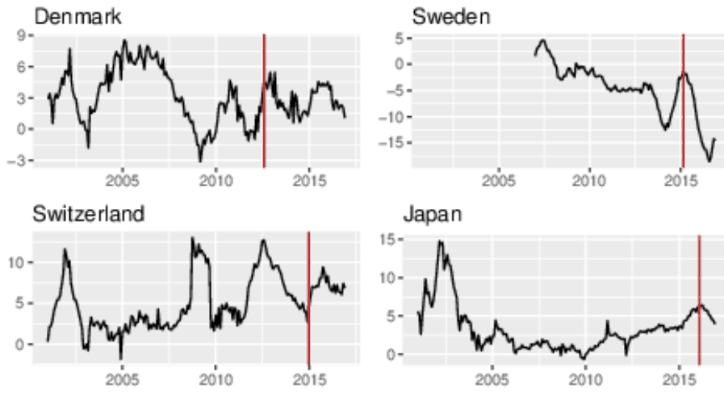
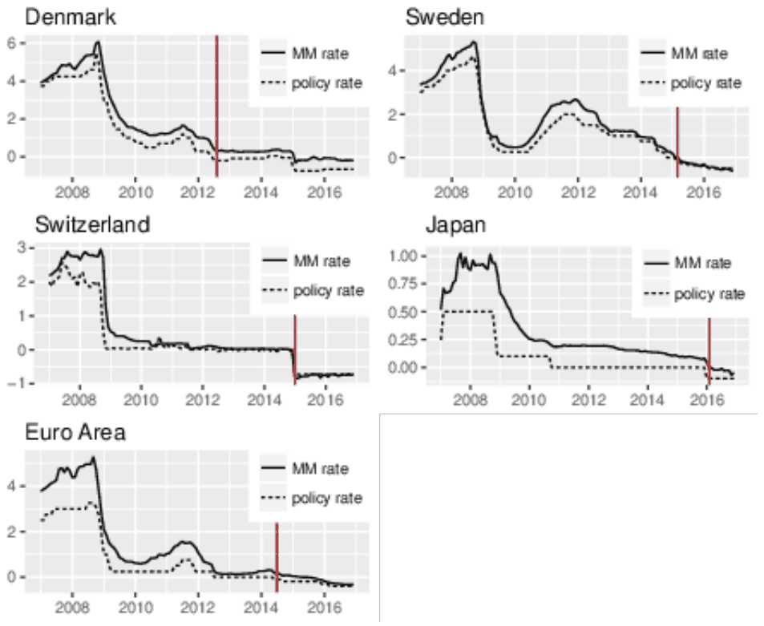
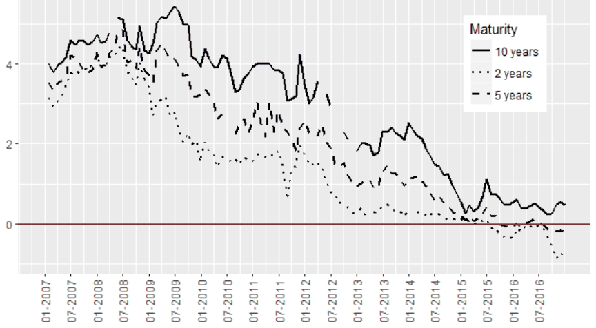
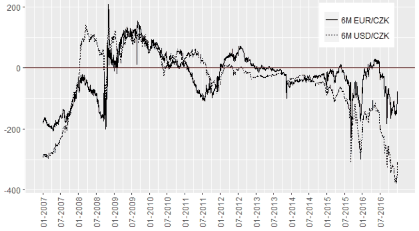
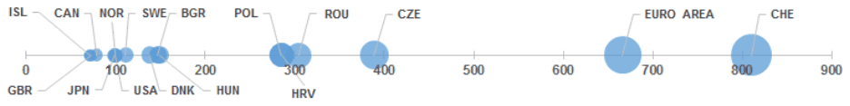
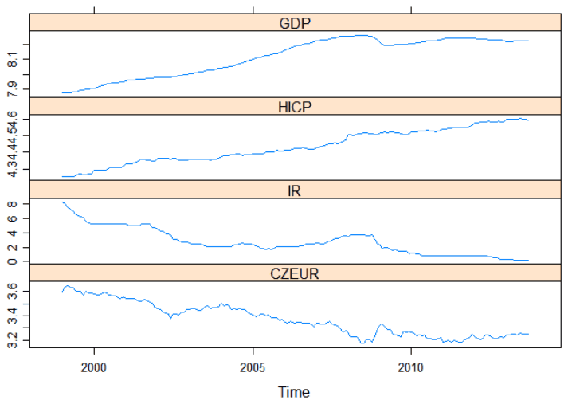
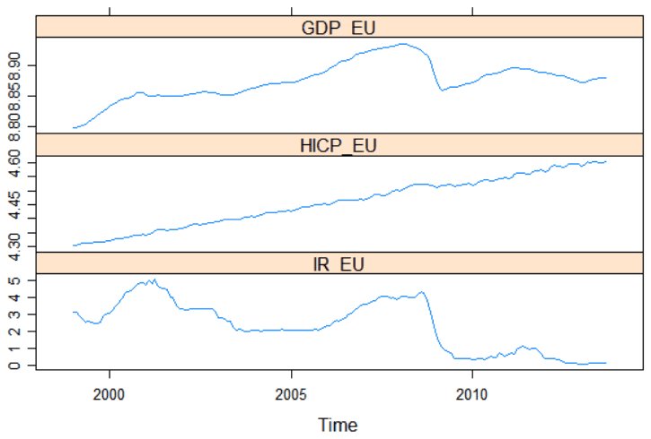
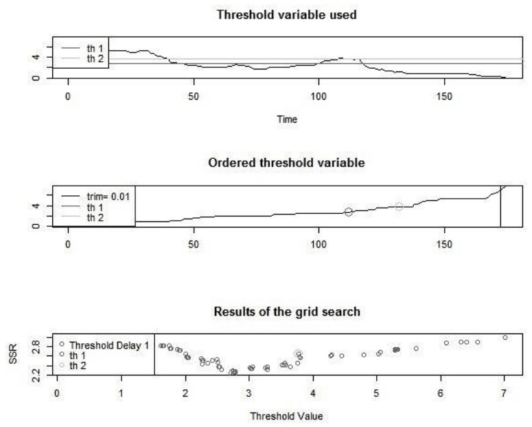
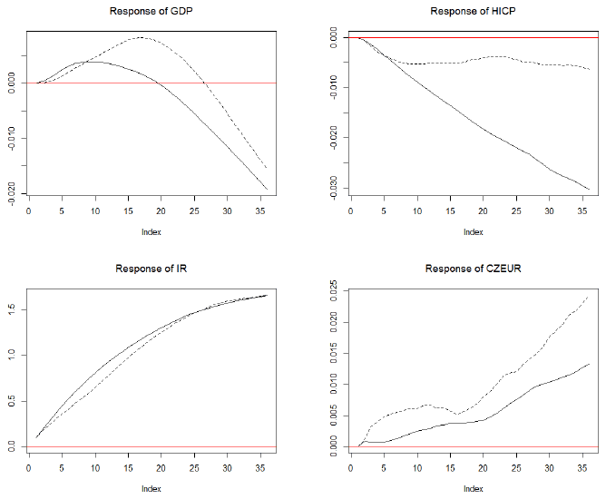

Estimating the Effective Lower Bound on the Czech National Bank's Policy Rate
Dominika Kolcunova, Tomas Havranek (2018), "Estimating the Effective Lower Bound on the Czech National Bank's Policy Rate." Czech Journal of Economics and Finance 68(6): 550-577. https://journal.fsv.cuni.cz/mag/article/show/id/1422.
Dominika KOLCUNOVA – Czech National Bank and Charles University, Prague, Czech Republic (dominika.kolcunova@cnb.cz)
Tomas HAVRANEK – Czech National Bank and Charles University, Prague, Czech Republic (tomas.havranek@cnb.cz)
JEL Classification: E52, E58, E43, E44
Keywords: effective lower bound, zero lower bound, negative interest rates, costs of cash, transmission of monetary policy
Abstract
This paper focuses on the estimation of the effective lower bound on the Czech National Bank’s policy rate. The effective lower bound is determined by the value below which holding and using cash would be preferable to holding deposits with negative yields. This bound is approximated on the basis of the storage, insurance and transportation costs of cash and the loss of convenience associated with cashless payments. This estimate is complemented by a calculation based on interest charges reflecting the impact of negative rates on banks’ profitability. Overall we get a mean of slightly below −1%, approximately in the interval (−2.0%, −0.4%). In addition, by means of a vector autoregression we show that the potential of negative rates is not sufficient to deliver monetary policy easing similar in its effects to the impact of the exchange rate commitment during the years 2013–2017.
1. Introduction
In the years after the outbreak of the global financial crisis, central banks have cut their policy rates once every three days on average. Since 2012, several central banks in Europe and the Bank of Japan have moved their key policy rates even further into negative territory as one of the unconventional monetary policy measures aimed at providing further monetary policy easing. In addition to potential benefits, however, negative rates have several drawbacks, including reduced profits of banks and consequent potential negative effects on their stability as well as the stability of insurance companies and pension funds. Irrespective of whether pros or cons prevail, by imposing negative policy rates central banks have disproved the traditional view that nominal interest rates cannot fall below zero as implied by the concept of the zero lower bound (ZLB).
The ZLB resides in the assumption that investors can always switch from deposits to cash, which is often characterized as an asset with zero yield, instead of accepting negative interest rates. Thus, it may seem that the power of negative rates is inherently limited by the existence of cash. However, holding and using cash, especially in large amounts, is not costless, so the effective yield on cash is negative. Therefore, the notion of an effective lower bound (ELB) on interest rates is introduced.
*We thank Branislav Saxa, Jonathan Witmer, Tomáš Holub, Michal Franta and two anonymous referees for useful comments. We would also like to thank Oldřich Dědek and Roman Horváth for useful comments concerning the previous version of the paper. Authors acknowledge support from the Czech Science Foundation (grant no. P402/12/G097). The views expressed here are ours and not necessarily those of the Czech National Bank.
This lower bound is given by the threshold below which holding deposits with negative interest rates is more costly than holding cash and below which a flight to cash could be provoked, consequently causing the negative rates to be ineffective.
The main aim of the paper is to estimate the level of the ELB on the policy rate in the Czech Republic. Specifically, we want to approximate the level of costs of holding and using cash, which consist of storage, transport and insurance costs and the costs of loss of convenience associated with electronic transactions. In a second approach to the problem, we estimate the direct costs to banks’ profitability induced by negative interest rates with respect to the specific characteristics of the Czech economy and financial market conditions.
In addition to the costs of holding and using cash itself, the expected duration of negative rates is important in determining the ELB. The longer is the duration, the more probable is conversion into cash. Nevertheless, international experience has already proven that negative interest rates can last several years without any significant signs of a surge in the demand for cash, muted transmission to money market rates or disruptions in the functioning of the financial system. Overall, our results indicate that the current best estimate of the ELB is −1.2%. Given the uncertainty surrounding the point estimate, we suggest that the ELB lies in the interval (−2.0%, −0.4%). With a shorter duration and a tiered system, the estimate could be less conservative. On the other hand, with a longer duration and/or without a tiered system, the rate could be closer to zero. The estimate for the ELB is found to be pulled down by the high costs of loss of convenience, which are significantly higher than the costs of storage and insurance. In contrast, a high share of total assets in the banking system that would be subject to negative rates (given the present conditions) shifts the estimate closer to zero. Our results may be of considerable interest in the event of a future crisis and a further need for monetary easing, when the question of negative rates will certainly re-emerge.
The remainder of the paper is organized as follows. Section 2 briefly presents related literature and the international experience with negative interest rates. Section 3 offers an overview of negative rates in different parts of the Czech financial market, and section 4 contains the estimation of the ELB. Section 5 complements the paper with a monetary VAR model suggesting that the policy rate would have had to fall below its ELB estimated in section 4 in order to provide a sufficient monetary policy stimulus if it had been the only unconventional instrument used. Section 6 provides concluding remarks.
2. Related Literature and the International Experience
The literature is rich in research addressing the zero lower bound and mentioning low or negative interest rates as an unconventional monetary policy measures. While it could be beneficial to discuss both the merits and drawbacks of this instrument, such a discussion is well beyond the scope of our paper. Rather, we will focus purely on the estimate of the lower bound on negative rates itself. Regardless of whether or not economists agree with imposing the negative interest rate policy, there is a growing consensus that the ELB is negative rather than zero. Broad estimates suggest it may be as low as −2.0%, while more conservative estimates suggest −1.0% (Jackson, 2015). Nevertheless, the literature lacks the proper research explicitly determining the ELB.
Almost the only country-specific research on this topic has been conducted by Witmer and Yang (2016), who estimated Canada’s ELB. Based on evaluating the costs of transporting, storing and holding cash and inconvenience costs and using assessments of market adaptation in other countries, their best estimate lies in the interval between −0.75% and −0.25%. Much less conservative is the recent report by Barr et al. (2016), who, based on calculating annual direct costs, suggest that rates could be cut to as low as −4.5% in the euro area, to −1.3% in the U.S. and to −2.5% in the United Kingdom when using a tiered system, without any critical risk of damage to banks’ balance sheets and interest margins. The differences across countries stem from different ratios of the reserves to which negative rates are applied, to total assets. The calibration of the tiers aims to be such that the stock of reserves subject to negative rates is as small as possible but still large enough to ensure transmission to money market rates.
The important parameter in determining the ELB is the length of the period of negative rates: the longer this period lasts, the more advantageous it would be to build storage capacity instead of earning negative yields and thus to switch to cash. Bean (2013) argues that without some imposed restrictions on the convertibility of bank reserves into cash, rates much below −0.5% for more than a year or two could initiate a move into cash. Jackson (2015), however, suggests that as long as a positive spread between borrowing and lending rates exists, the absolute level of interest rates is of less importance for intermediaries.
An increasing strand of the literature covers suggestions on how to overcome the lower bound, i.e. restrictions that would prevent a flight to cash, including phasing out paper currency completely, or at least phasing out high-denomination notes (Rogoff, 2016), taxing currency, or imposing a variable exchange rate between currency and deposits (Buiter, 2015). Instead of an intuitive fee for using cash or holding excessive cash, Kimball (2015) proposes a premium for clients’ withdrawals leading to a decrease in the relative value of cash. Other approaches include switching to an electronic money standard and moving away from paper currency by imposing a fee on deposits at the central bank (Agarwal and Kimball, 2015) or using sovereign digital currencies bearing an interest rate set by the central bank (Bordo and Levin, 2017). We do not incorporate these measures into the ELB estimation as they could lead to further decreases in or even a complete removal of the ELB. The important message is that these measures affirm it should be possible to overcome the binding lower bound in the future.
In addition to the theoretical literature, it is important to explore the most crucial conclusions from the international experience with negative interest rate policy. To date, nine central banks have imposed negative interest rates: the ECB and the central banks of Bosnia and Herzegovina, Bulgaria, Denmark, Hungary, Japan, Norway, Switzerland and Sweden. However, some of these countries are not true examples of negative interest rate policy: in Bulgaria and Bosnia and Herzegovina, the negative rate was put into effect in order to transmit the ECB’s monetary policy stance, not as a measure of active monetary policy, given their policy regimes with the euro as exchange rate anchor. Norway and Hungary are not characterized as countries with true negative interest rate policy either; rather, their key policy rates remain positive. The rest of the countries (except of Sweden) use variously defined tiered systems: negative rates are applied to only a portion of the reserves.
When we examine the data from these countries, we find no conspicuous evidence of negative interest rates causing a depositor flight to cash, significant volatility or impairments to the market functioning to date. Several authors claim that financial stability has not been compromised by the use of negative policy rates and that transmission has been smooth and swift (Arteta et al., 2016; Alsterlind et al., 2015; Jackson, 2015; Jensen and Spange, 2015, among others).
Specifically, a substantial increase in the use of cash is not indicated in any of the countries, as can be seen in Fig. 1. Although the year-on-year percentage changes in the total amount of currency in circulation are positive in the cases of Denmark, Switzerland and Japan, this has been the case throughout the observed period, with no exceptional increases after the implementation of the negative interest rate policy. Most of the increase in the currency in circulation can be explained by its normal relation to interest rate movements: the amount of currency in circulation increases when interest rates decline, regardless of whether or not they are positive or negative (Jobst and Lin, 2016). The exception to this assertion is Sweden, where the amount of notes and coins in circulation has been constantly falling since 2007.
Apparently, current interest rates have not surpassed their lower bound. Nevertheless, as was mentioned before, duration expectations play a role as well. Since Denmark implemented a negative interest rate policy back in 2012 (and the duration of the return to slightly positive rates in between was very short), at the time of this writing, we can say that a period of approximately five years of negative rates has not proven to alter expectations sufficiently to trigger incentives for a move to cash.
Money market rates are the second important indicator. It can be shown that money markets have continued to work smoothly, and there is no indication that the pass-through has been significantly weakened, as can be seen in Fig. 2 where three-month money market rates are almost perfectly correlated with the movement of monetary policy rates and followed policy rates into negative territory.

Notes: Red lines represent the introduction of negative interest rates. Source: National central banks.

Notes: Red lines represent the introduction of negative interest rates. MM = money market. Source: National central banks.
The last point of view considers commercial lending and deposit rates, which determine bank profitability. Jobst and Lin (2016) find that lending rates for both the corporate and retail segments were lowered. Deposit rates decreased to some extent as well, allowing for preservation of margins and increasing credit growth. Negative deposit rates, however, are usually charged only to large institutional depositors and are not passed through to smaller retail depositors, slackening the transmission of negative interest rates. Similarly, Witmer and Yang (2016) assert that with respect to this reluctance to pass negative rates to retail depositors and decreasing bank profitability, the bank lending channel of transmission may prove to be less powerful. Given this restricted transmission, there are indications that the effect of a one-unit decrease in interest rates in negative territory is likely to be smaller than the effect of the same one-unit decrease in rates in positive territory (e.g. Bean, 2013; Jackson, 2015). The pass-through from financial market rates to rates charged by banks is an important aspect of monetary policy transmission and was examined by Havranek et al. (2016) for Czech loans and deposits products. They find that since the financial crisis the pass-through has been considerably weaker than before (Havranek et al., 2016). Also, Havranek and Rusnak (2013) assert monetary policy transmission is slower for countries with greater financial development as some financial innovations may serve as protection against monetary policy shocks.
In spite of that, Jobst and Lin (2016) assert that the effect of negative interest rate policy has so far been positive and that its objectives are being fulfilled (lower funding costs, higher asset prices, an enhanced signaling effect of monetary policy, enhanced portfolio rebalancing channels, modest credit expansion, and boosted aggregate demand), while concerns have not proven to materialize. The main concern, relating to banks’ profitability, has been mitigated so far. Jobst and Lin (2016) estimated that in the euro area, the effect was small: a decline in interest rates of 50 basis points caused a reduction in net interest margins of 7 basis points. Even in cases with sticky retail deposit rates, banks compensated for the lower margins with a higher volume of lending and increases in fees and commissions and profited from lower funding costs. Nevertheless, this compensation of higher net interest margins is probably also limited, the impact on bank profitability is non-linear in further declines of policy rates and the returns of lower rates are diminishing.
3. Negative Rates in the Czech Market
Even though the CNB’s main policy rate – the 2W repo rate – was positive over the whole time period studied, negative rates already existed in different parts of the Czech financial market.1
Government Bonds
At first, Czech government bonds, which financial institutions can store excessive money in, earned negative yields. That holds for all bonds with maturities ranging from one month to six years. Only the bonds with maturities over seven years yielded slightly positive returns during 2016. The yield on the basket of government bonds with an average residual maturity of two years was constantly negative from July 2015 to the end of our sample, similarly to the average five-year maturity basket (Fig. 3). However, the yield on government bonds was, however, affected by the exchange rate commitment, and the negative yields may reflect a speculative motive of foreign investors who accepted negative yields in exchange for profits from expected currency appreciation after the exit from the exchange rate commitment.2

Source: Czech National Bank.
FX Swap-Implied Interest Rate
Fig. 4 shows that both the three- and six-month forward points for both currency pairs – EUR/CZK and USD/CZK – had been already negative for a relatively long time. As from the beginning of the CNB’s FX interventions, the forward points were almost constantly negative. The forward exchange rate can be calculated by dividing the forward points by 1000 and adding the result to the spot rate. Negative forward points thus imply that the forward exchange rate is below the spot rate, i.e. the implied swap rate (defined as the forward rate minus the spot rate) is negative. In normal times, lower-interest-rate currencies tend to trade at a forward foreign exchange rate premium (= positive forward points) in relation to another currency offering higher interest rates according to the covered interest rate parity (CIP), so negative swap rates as such are not an example of the phenomenon of negative rates in an economy. CIP, however, appeared not to hold at every moment, especially not in crisis periods (e.g., negative forward points for USD/CZK and a simultaneously higher U.S. interest rate). Still, a negative implied swap rate means that a nonresident who bought CZK (but did not want to invest in government bonds with negative yields) had to ‘pay’ to deposit CZK for a given period.

Source: Czech National Bank.
Selective Fees of Banks in the Czech Market
Perhaps most interestingly, negative client rates have been already present for several months now in the Czech banking sector as well. Several commercial banks have introduced selective fees on deposits above a certain limit, particularly for corporate and institutional depositors. This has been induced by two factors, first by negative rates imposed by central banks in Europe and banks’ preparations for adjusting quickly to prospective negative rates in the domestic market and second by negative interest rates on government bonds, in which banks can store their excess funds. Instead of a negative rate per se, banks usually impose fees on deposits, which is effectively the same thing. A more detailed overview of fees on deposits can be found in Table 1. For the most part, negative interest rates have not been applied to private individuals, and even in the cases where they have, the threshold has been very high. However, the rate of 1% p.a. on over-the-limit deposits may insinuate at least something about the ELB. The longer there are conditions of low growth and negative policy rates, the more likely it is that negative rates will be passed on to smaller deposits or even to retail customers.3
| Bank | Deposits affected1 | Fee |
|---|---|---|
| Ceskoslovenska Obchodni Banka | Fee for additional deposits if deposit balance exceeds CZK 100 million | 0.15% of differential balance |
| Ceska Sporitelna | Fee for additional deposits if deposit balance exceeds CZK 100 million | 0.15% of differential balance |
| Komercni Banka | Fee for over-the-limit deposits in CHF above CHF 40,000 | 1% p.a. |
| Fee for over-the-limit deposits in SEK above SEK 400,000 | 1% p.a. | |
| Fee for over-the-limit deposits in DKK above DKK 300,000 | 1% p.a. | |
| Fee for over-the-limit deposits in JPY above JPY 5 million | 0.5% p.a. | |
| Fee for over-the-limit deposits in CZK above CZK 1 bilion | 0.2% p.a. | |
| Fee for over-the-limit deposits in EUR above EUR 40 million | 0.5% p.a. | |
| Unicredit Bank | Fee for additional deposits if deposit balance exceeds CZK 100 million | 0.15% of differential balance |
| Fee for over-the-limit deposits in CZK above CZK 100 million | 0.5% p.a. | |
| Fee for over-the-limit deposits in EUR above EUR 3 million | 0.5% p.a. | |
| Fee for over-the-limit deposits in CHF above CHF 100,000 | 0.5% p.a. | |
| Hypotecni banka | x | x |
| Raiffeisenbank | Fee for additional deposits if deposit balance exceeds CZK 100 million | 0.15% of differential balance |
| Fee for over-the-limit deposits in CHF above CHF 1 million | 1% p.a. | |
| Fee for over-the-limit deposits in JPY above JPY 100 million | 1% p.a. | |
| Fee for over-the-limit deposits in DKK above DKK 3 million | 1% p.a. | |
| Fee for over-the-limit deposits in SEK above SEK 3 million | 1% p.a. | |
| Fee for over-the-limit deposits in EUR above EUR 1 million2 | 1% p.a. | |
| Fee for over-the-limit deposits in CZK above CZK 100 million2 | 0.5% p.a. | |
| J&T Banka | x | x |
| Moneta Money Bank | Fee for additional deposits if deposit balance exceeds CZK 100 million | 0.15% of differential balance |
| PPF banka | Fee for additional deposits if deposit balance exceeds CZK 100 million | 0.15% of differential balance |
| Fio Banka | Fee for additional deposits if deposit balance exceeds CZK 100 million3 | 0.15% of differential balance |
| Air Bank | x | x |
| Sberbank | Fee for additional deposits if deposit balance exceeds CZK 50 million | 0.18% of differential balance |
| Equa Bank | x | x |
| Wuestenrot hypotecni banka | x | x |
| Expobank | Fee for additional deposits if deposit balance exceeds CZK 30 million | 0.15% of differential balance |
1 In most cases, fees are applied to the corporate sector, usually entrepreneurs, enterprises, the public sector and other legal entities. 2 Applied only to financial customers. 3 Applied also to private individuals. Notes: The differential balance is the difference between the deposit balances as of 31 December of the respective year and (i) the amount of CZK 100 million, or (ii) the average balance of the total volume of deposits on the last day of each month in the period from January to November of the relevant year. I.e. the fees for additional deposits are paid yearly on the differential balance. By contrast, over-the-limit deposits are paid monthly on all balances above the limit value. The fees for additional deposits of 0.15% of the differential balance are a consequence of the obligatory contribution (based on the amount of deposits at the year-end) to the Single Resolution Fund, established by SRM Regulation (Regulation (EU) No 806/2014 to finance the restructuring of failing credit institutions.) We include all large, medium-sized and small commercial banks except for two majority state-owned banks. Savings banks and branches of foreign banks are not included. Source: Collected from the banks’ price lists and websites.
4. Effective Lower Bound Estimate
Finally, the following section focuses on the estimation of the effective lower bound. The bound is given by the existence of cash, which preventsinterest rates from falling far below zero. At the same time, holding and using cash entail some costs that induce the bound to be below zero. We use two approaches to estimate the ELB: the first one approximates the costs of holding cash (the costs associated with storing, transporting and insuring cash) and the costs of using cash (equivalent to the value of the convenience of using non-cash payments). This approach (subsections 4.1 and 4.2) can be viewed as a ‘bottom-up’ approach, i.e. one approximating the ELB from the point of view of households and firms. The second, direct approach, can be interpreted as holistic, or ‘top-down’, estimating the ELB from the point of view of financial institutions.
4.1. Storage, Transport and Insurance Costs
Storage, transport/transactions and insurance costs represent significant impediments to provoking an abrupt move into cash at the zero level of interest rates. For small retail customers, Jan (2016) finds that the costs of storage constitutes 0.04–1% of the stored value ranging from CZK 100,000 to CZK 2.7 million in deposit boxes (i.e. security boxes in a banks, usually partly including insurance), and 0.13–3.5% for the same value in private safes, plus 0.6% of the value in insurance costs, which, however, are difficult to determine, as there is almost no supply of this service in developed countries.4
Given the low capacity and underdeveloped nature of the cash storage market overall, we continue by approximating the costs of storage, transportation and insurance with the costs for other stores of value, especially precious metals such as gold, silver and platinum and other minerals such as crude oil, for which the market is larger and more developed. Keohane (2015) asserts that the annual costs of carry for gold are approximately 0.2%. However, based on physical characteristics, he argues that crude oil may be a better proxy given its similar physical characteristics (space occupied, resistance, etc.). Depending on the type of storage, crude oil storage costs can take values ranging from 1% to as much as 10%. We will, however, consider the lower bound of this interval to be closer to the value for gold. Witmer and Yang (2016) suggest that storage costs, including insurance costs, are 0.2–0.35% for gold and 0.4– 0.5% for silver (so the price is not linear in space, because with silver, the same value occupies much more than two times the space for gold). Jackson (2015) asserts that the costs of storage, including insurance costs, lie in the range of 0.2–1.0%.
The costs associated with precious metals include not only storage costs, but also the costs of conversion between precious metals and cash, i.e., transaction costs. Transaction costs depend on the amount and duration of storage. They can be found in the services of online bailment service providers, where large volumes incur storage costs of 0.12% and one-year total costs (including transaction costs) of 0.22%.5 This value is near the lower bound of the aforementioned intervals given in Jackson (2015) and Witmer and Yang (2016).
In the Czech Republic, storage services are offered only by the Czech Mint and by several small vault providers and are limited to satisfying the low demand among retail customers. The costs of storing precious metals in the Czech Mint are relatively low, ranging from 0.003% to 0.15% depending on the amount stored. However, the increased demand for cash storage after hypothetical cash hoarding would very likely lead to an escalation in storage and insurance costs as neither the amount of cash that can be stored nor the amount that can be insured is infinite. Therefore, we suspect that those fees could be too low for determining the costs of storing cash on a larger scale. In summary, we assume that the costs of storing commodities do not differ much across countries, so we suggest that the global (wholesale) estimates of the costs of storing and insuring precious metals reported in the literature are reasonable estimates for the Czech Republic as well.
What may, however, provide a more accurate estimate of the level of currency storage and transportation costs in a given country is the real currency denomination. Currencies with larger (smaller) denominations should incur smaller (larger) storage, transport and insurance costs (Jackson, 2015). The largest banknote in Switzerland is CHF 1,000 (USD 1,027), the largest in the euro area is EUR 500 (USD 560), the largest in Denmark is DKK 1,000 USD (150) and the largest in the Czech Republic is CZK 5,000 (USD 214). In real terms (adjusted for purchasing power parities, PPP), the largest denomination of the Czech koruna is larger than the largest denominations in the other countries outside the euro area (Fig. 5). Out of the countries in our sample, only the Swiss franc and the euro have larger denominations. The largest denominations of the Swiss franc and the euro is 2.1 times and 1.7 times larger than the largest denomination of the Czech koruna. Based on that we could assume the storage costs should be higher for the Czech koruna than for the Swiss franc. However, we do not assume a linear dependence, as there are some fixed costs associated with transportation and storage that do not depend on the denomination. The real value of the largest denomination of the Czech koruna is just slightly below the mid-point of the interval of the denominations of the European currencies under comparison, but well above the mean value and even further above the median. Accordingly, we estimate the storage costs to lie in the lower half of the interval provided by Jackson (2015), i.e., 0.2–0.6%. In contrast to Jackson (2015), Witmer and Yang (2016) do not find this dependence important, as they assert that insurance costs, which do not depend substantially on the denomination, are the main component of the costs of holding cash, rather than the costs of storage itself, and so currency denomination does not play a crucial role.

Notes: As of December 2016. CHE = Switzerland, CZE = Czech Republic, ROU = Romania, HRV = Croatia, POL = Poland, HUN = Hungary, BGR = Bulgaria, DNK = Denmark, SWE = Sweden, NOR = Norway, JPN = Japan, CAN = Canada, GBR = United Kingdom, ISL = Iceland.
Source: OECD, author’s calculations.
The next way of approximating storage costs employs precious metal-backed ETFs (physically backed ETFs), which are liquid financial instruments for investing in precious metals stored in vaults. Table 2 provides an overview of the fees for physically backed ETFs traded on the European stock exchanges (London Stock Exchange, Deutsche Borse, Borsa Italiana) with vaults located in Europe (since ETFs can be traded globally and there are no ETFs traded on the Prague Stock Exchange with vaults located in the Czech Republic). Following Witmer and Yang (2016), we can assume that fund-management fees and expenses make up a small proportion of the total fees based on the fact that the overall fees for many equity ETFs are low (between 5 and 10 basis points). Therefore, it appears that the excess fee for physically backed commodity funds in comparison with non-physically backed funds is a result of the costs of storing and insuring bullion in vaults. This can be then regarded as an approximation of the costs of storing cash, and it is indeed again similar to the previous values of publicly available costs of storing precious metals: the average fee for ETFs is approximately 0.4%, and subtracting management fees 0.05–0.10% yields storage and insurance costs of 0.30-0.35%.
| ETF | Currency | Replication method | Vault location | MER (%) |
|---|---|---|---|---|
| ETFS Daily Hedged Physical Gold | EUR | bullion | London | 0.39 |
| ETFS Daily Hedged Physical Gold | GBP | bullion | London | 0.39 |
| ETFS Physical Gold | USD | bullion | London | 0.39 |
| ETFS Physical Gold | GBP | bullion | London | 0.39 |
| ETFS Physical Palladium | USD | bullion | Zurich, London | 0.49 |
| ETFS Physical Platinum | USD | bullion | Zurich, London | 0.49 |
| ETFS Physical PM Basket | USD | bullion | Zurich, London | 0.44 |
| ETFS Physical PM Basket | GBP | bullion | Zurich, London | 0.44 |
| ETFS Physical Silver | USD | bullion | London | 0.49 |
| ETFS Physical Silver | GBP | bullion | London | 0.49 |
| ETFS Physical Swiss Gold | USD | bullion | London | 0.39 |
| Gold Bullion Securities | USD | bullion | London | 0.40 |
| Gold Bullion Securities | GBP | bullion | London | 0.40 |
Source: ETF Securities (2017). https://www.etfsecurities.com/retail/se/en-gb/products.aspx.
4.2. Loss of Convenience
4.2.1. Interchange Fees
The second component of the ELB is the loss of the convenience of using electronic money instead of cash (i.e. the benefits of being able to make payments electronically, or the inconvenience of using cash), hereinafter ‘convenience costs’. Interchange fees are sometimes used in the literature as a proxy for these convenience costs. Interchange fees are paid for the acceptance of card-based transactions between banks and are set by operators of payment cards schemes and incorporated into the final prices charged to consumers. As Witmer and Yang (2016) points out, however, these figures overestimate the convenience costs, as they are charged on transactions, not on cash holdings. Moreover, we cannot really assume the figures equal customers’ utility from using different kinds of electronic payments instead of cash payments, as the price is mostly the same for cash and electronic payments so consumers are not fully aware of the fees. On top of that, the current level of fees is not informative, since it is affected by the regulation on interchange fees for card-based payment transactions6, which lowers and unifies interchange fees across the EU to 0.2% of the value of transactions for consumer debit cards and to 0.3% for consumer credit cards. In lilght of that, the interchange fees dating from the period before the regulation took effect would be more informative, especially for the Czech Republic, since the country had one of the highest average levels of interchange fees in the EU: in 2014, the average fees charged by Visa were 1.0%, and those by MasterCard 1.1%. The fees for commercial cards, which are not affected by the regulation, are even higher, with the average being approximately 1.5% of the value of a transaction. However, given the above-mentioned shortcomings of using interchange fees we continue with the second possible approach.
4.2.2. Social Costs of Different Payment Instruments
An alternative to estimating the convenience costs by interchange fees is to use the concept proposed by Schmiedel et al. (2012), who estimated the social and private costs of retail payment instruments for 13 EU countries (the Czech Republic was not included). Social costs are defined as the sum of the pure costs of producing payment instruments incurred by the different stakeholders in the payments market, i.e. the costs to society of providing retail payment services reflecting the use of resources in the production of these services (Schmiedel et al., 2012). These costs are substantial, amounting up to 1% of GDP in the sample of countries. According to the authors’ conclusions, the social costs of cash payments constitute almost half of the total social costs of all payments.
With respect to our goal, we are interested in particular in the unit costs of payment instruments. The average cost associated with cash payments per 1 euro of sale is 0.023 euro, i.e., 2.3%, ranging from 1.3% to 3.4%. Lacking a better estimate, we consider a mean value of 2.3% as a reasonable estimate of the social costs of cash payments in the Czech Republic. Non-cash payment instruments incur costs as well, so the relative costs of cash can be determined as the difference between the costs of cash payments and the costs of other types of payments. Credit transfers – the most important type, with a share of almost 70% of the total number of transactions – carry average unit costs of 0.2%. The social costs of cash are thus approximately 2.1 percentage points higher than the social costs of credit transfers. The second most frequently used cashless payment instruments, cards (more precisely debit cards, which are less costly to use), carry average unit costs of 0.017 per euro of sale. The social costs of cash are thus 0.6% higher than the social costs of card payments. Altogether, based on this approach, the convenience costs most probably lie in the interval of 0.4–2.1%, with a mean of 1.4%, which is not far away from the interchange fees either.
This, however, is the value related to the cash transactions, whereas the storage and insurance costs discussed in subsection 4.1 were expressed relative to cash holdings. We thus have to distinguish between the transactional motive and the store of value motive of holding cash: if, for example, a 50% share of cash holdings is held for transactional purposes, the convenience costs should enter the computation of the ELB with this weight. In order to estimate the share held for transactional purposes versus the one held as a store of value, we examine the composition of currency in circulation. We assume that the highest-denomination banknote, i.e. CZK 5,000, is held as a store of value only: it is not provided by hardly any ATMs in the country.7 The rest of the banknotes and coins in circulation are assumed to be held mainly for transactional purposes. In recent years, the share of the value of the CZK 5,000 banknotes has been 27% of total currency in circulation on average (ECB, 2017). We thus assume that 73% of cash is held mainly for transactional purposes. This weight will then be used when summing the two components of the ELB.
The magnitude of the loss of convenience is the result of consumer preferences. On the one hand, the number of electronic transactions per household in the Czech Republic is much lower than in leading countries, while the share of ATM cash withdrawals is higher than the European average, and the share of electronic POS transactions is lower (ECB, 2017). On the other hand, the Czech Republic is one of the top-performing countries in using contactless payments: there are 0.79 contactless cards per person, well above the European average, and 76% of the POS terminals are contactless, whereas the European average is approximately 21% (LTP, 2016). Smart Payment Association (2016) points out that 77% of all in-store payments (processed by MasterCard) were contactless in 2015. This rate is higher than that in other Central European countries: 55% in Poland, 40% in Hungary and 38% in Slovakia.
While foreign studies show that cash is still dominant for low transaction amounts (e.g. Arango et al., 2011), others find that the share of cash payments is decreasing (e.g. Mooslechner et al., 2012; Amromin and Chakravorti, 2009). Moreover, an active user of contactless payments does not have any incentive to use cash even for small transaction amounts. According to Fung et al. (2012), the active use of contactless payments leads to a decrease in the ratio of cash purchases to total expenditures by 14% in volume and 13% in number of transactions.
In summary, the high preference for cashless and contactless payments in the Czech Republic and the declining transactional demand for cash stemming from this preference justify relatively high costs of using cash. It is also important to note that in addition to electronic payments being convenient, cash payments above the equivalent of EUR 10,000 are illegal under Act No. 261/2014 Coll. Comparing with section 4.1, the benefits of the possibility to make electronic payments are higher than the costs of storage or insurance of cash. Besides households’ preferences, the ‘bottom-up’ approach of sections 4.1 and 4.2 also covers firms, for which the convenience value may be very high, especially given their large and frequent transactions such as payroll payments. We thus find a mean of 1% (after adjusting for the share of cash held for transactional purposes) to be reasonable.
4.3. Direct Costs of Negative Rates
A completely different approach to estimating the ELB resides in evaluating the direct costs of the negative interest rate policy imposed on the financial sector. We follow the procedure suggested by Barr et al. (2016), who calculates annualized interest rate charges on reserves subject to negative rates and compare them with the size of the aggregate balance sheet, i.e., they calculate the ratio of the amount subject to negative rates times the interest rate to total assets. We applied the same procedure and found that the highest costs inflicted on the banking sector are in Switzerland, where they represent approximately 0.03% of the total assets of the aggregated sector (Table 3). In other countries, the costs are considerably smaller.
| Total volume | Volume subject to negative rates | Total assets | Ratio of annualized interest charges to total assets | |
|---|---|---|---|---|
| Switzerland | 412.90 | 116.34 | 3,185.23 | 0.027% |
| Denmark | 203.04 | 140.83 | 7,870.69 | 0.012% |
| Sweden | 227.78 | 227.78 | 12,286.76 | 0.009% |
| Japan | 297.35 | 23.80 | 990.54 | 0.002% |
Notes: In billions of local currency, except for Japan (trillions). Averages over periods of the negative interest rate policy, for Denmark only since 2015/01 Source: National central banks, author’s calculations.
This can be also interpreted as the ceteris paribus changes in the return on assets (ROA) when interest expense changes. In other words, a ratio of interest expenses for banks stemming from negative interest rates to total assets equal to, say 0.03%, means that by imposing negative rates (in comparison to a zero interest rates), the ROA is reduced by 3bps.8 Lacking better evidence, in accordance with Barr et al. (2016) we will take the Switzerland case, i.e. a change in ROA of 3 bps not causing any disruptions or flight to cash, as the best possible value to calibrate the ELB. Using this value as a limit, we calculate the interest rate that would lead to the same change in ROA in the Czech Republic. However, we also provide a sensitivity analysis and calculate the respective interest rates that would lead to a change in ROA of 1, 5 and 10 bps (Table 5). We use monthly data on monetary statistics over the period 2013-
2016, which are available from the CNB’s ARAD database (Table 4).
| Year | Total assets | ROA | O/N deposits at CNB | Reserves (required + excess) | Excess reserves | Repo operations |
|---|---|---|---|---|---|---|
| 2013 | 4,764 | 1.47% | 2,784.88 | 58.35 | 1.99 | 624.40 |
| 2014 | 5,207 | 1.27% | 4,527.31 | 61.67 | 2.21 | 908.21 |
| 2015 | 5,491 | 1.31% | 9,520.28 | 70.22 | 6.06 | 652.40 |
| 2016 | 5,900 | 1.21% | 14,403.75 | 92.17 | 22.79 | 999.12 |
Notes: Yearly averages of monthly values. In CZK billions (except for ROA).
The results are reported in Table 5. We calculate the interest rate that would correspond to a change in ROA of 1–10 bps. The columns in Table 5 differ in what items are subject to the negative interest rate – whether it is only the overnight deposit facility, or repo operations, etc. First, if the negative rate was imposed only on deposits in the standing deposit facility (under the current non-tiered regime), the policy rate (the discount rate in this case) could decrease to −0.64% (in the case of a 3 bps change in ROA) or from −0.21% to −2.1% in the case of a 1 or 10 bps change in ROA.
The second and third options calculate the interest rate if a negative rate is additionally applied to the (excess) reserves on the current account with the CNB and, mainly, to the repo operations.9 This latter option is of primary interest to us, as repo operations are the main monetary policy instrument. In this case, the policy rate could go as low as −0.23%.
The fourth option introduces a tiered system under which only 25% of the previous stock is subject to the negative rate. This was suggested by Barr et al. (2016) based on the experience in other countries and should ensure sufficient transmission of negative rates into the real economy. With this tiered system, the policy rate could go down as low as −0.93%. Given the fact that a tiered system in certain forms is used in all countries with negative interest rates (except for Sweden), we assume this could also be also a form used by the CNB in a hypothetical situation of negative rates; therefore, we find this figure of approximately − 0.93% to be the most realistic estimate amongst other specified options.
The fifth option shows the potential rate when 2–17% of the national GDP is subject to negative rates. Seventeen per cent of GDP has been subject to negative rates in Switzerland on average; however, given the large size of the Swiss reserve stock, Barr et al. (2016) suggests a benchmark of 2% of GDP since this was sufficient to keep money market rates close to the negative policy rate in the euro area. The mean of the interval is slightly below −1%, the same as in the fourth option.
| Change in ROA | O/N deposits | O/N deposits + reserves | O/N deposits + reserves + repos | 25% of [O/N deposits + reserves + repos] | 2%–17% of GDP |
|---|---|---|---|---|---|
| Items subject to negative rate | |||||
| 1 bps | −0.21% | −0.17% | −0.08% | −0.31% | −0.60% - −0.07% |
| 3 bps | −0.64% | −0.50% | −0.23% | −0.93% | −1.80% - −0.21% |
| 5 bps | −1.07% | −0.83% | −0.41% | −1.55% | −3.00% - −0.35% |
| 10 bps | −2.13% | −1.67% | −0.82% | −3.10% | −6.00% - −0.71% |
Notes: The table provides the interest rates that would, on average, cause the given change in ROA, changing the interest expense and keeping other things constant, using the data from 2013 to 2016. The preferred specification is a 3 bps change in ROA. Including the total amount of reserves (required and excess) vs. using excess reserves only does not produce significantly different results, so only the results with total reserves are included.
4.4. Technical and Legal Problems with Negative Rates
It is important to note that there may also be some technical and legal problems associated with the potential implementation of negative rates in the Czech Republic (e.g. Franta et al., 2014a). The costs of these problems could move the ELB back closer to zero. These constraints regulations under which penalty interest is defined as a multiple of the CNB’s discount rate. Without a change in legislation, negative rates would imply that the penalty for debtors in arrears is in fact negative. Similarly, variable rate loans are priced at the PRIBOR plus a constant value (the bank’s margin), which would reduce intended interest payments, or in extreme cases creditors would have to start paying money to debtors. Nevertheless, we assume that this is not a sufficient argument for rejecting negative interest rates as regulations and contracts can be adjusted or simply exempted from the effect of negative interest rates. A law forbidding the cash payments above the equivalent of EUR 10, 000 is already in place (Act No. 261/2014 Coll.). The international experience shows that the technical problems with negative interest rate policy can be overcome.
4.5. Summary
Table 6 summarizes the main findings of this section. At first, the costs of storage and insurance lie in the interval (0.2%, 0.6%). The costs of the loss of convenience, as proxied by social costs, are the larger component of the ELB, and it is very probable that they attain values of around 1% in the Czech Republic.10 Summing up these two components, we arrive at a mean of 1.4% of annual costs, with an interval of 0.6% to 2.1% (positive figures for all the different kinds of costs represent a negative ELB). Thus, based on the first approach, the ELB should lie in the interval (−2.1%, −0.6%).
The mean of the second approach of direct costs is near 1%, with an interval of (0.2%, 1.8%), i.e. an ELB of between −0.2% and −1.8%. The two approaches, each focused on different agents, do not yield significantly different results.11 Averaging the two approaches leads to a mean of approximately 1.2%. Thus, in summary, we suggest that the ELB on the CNB’s policy rate is slightly below −1%, with the most reasonable estimate suggesting −1.2%. Given the high uncertainty surrounding the point estimate, we suggest that the ELB lies in the interval (−2.0%, −0.4%).
| Min | Mean | Max | ||
|---|---|---|---|---|
| Approach 1 | Costs of storage and insurance | 0.2 | 0.4 | 0.6 |
| Convenience costs | 0.4 | 1.0 | 1.5 | |
| Total | 0.6 | 1.4 | 2.1 | |
| Approach 2 | Direct costs to profitability | 0.2 | 1.0 | 1.8 |
| Average | 0.4 | 1.2 | 2.0 |
Notes: Positive figures for the different kinds of costs represent a negative ELB. The results of Approaches 1 and 2 are not fundamentally different. The result for convenience costs arises from the concept of social costs; using the interchange fees would not change the results significantly. The lower/upperbounds for the individual items corresponds to the minimum/maximum values of those items as found in the previous sections. The final estimate (bottom row) is calculated as the simple average of the two approaches. This also applies to the final interval values: for example, the lower bound of 0.4% is the average of the lower bounds of the two approaches, 0.6% and 0.2%.
5. Comparison of the Potential of Negative Interest Rates with the CNB’s Exchange Rate Commitment
The aim of the following section is to evaluate the strength of the interest rate channel of the monetary policy transmission in the Czech economy. While this has already been done several times (e.g. Havranek et al., 2012; Franta et al., 2014b; Borys et al., 2009; Holub, 2008), our ultimate goal is novel: to estimate the effect of potential negative rates at the ELB and to compare it with the effect of the exchange rate commitment, which was used as an unconventional measure from November 2013 to April 2017. In comparison with older studies, the data are updated to include the new periods, and a threshold VAR is applied in order to detect potentially non-linear time-varying relations arising from attaining the ZLB. By means of cumulative impulse response functions, we calculate the approximate decrease in the interest rate that would be required to equal the effect of the exchange rate commitment.
Given that the Czech Republic is a small open economy strongly intertwined with the surrounding European economies, it seems important to control for the effect of euro area developments. Imposing block restrictions, under which a foreign block of variables has an impact on domestic variables but in which a shock to domestic variables is assumed to be too small to affect foreign variables, has been suggested by many studies focused on small open economies. Examples include Mackowiak (2006); Cushman and Zha (1997); Zha (1999) and Jarocinski (2010), who include foreign variables treated as exogenous variables in order to avoid mistaking monetary authorities’ responses to external developments for domestic monetary policy shocks. As far as the research on the Czech economy is concerned, block restrictions are included in Havranek et al. (2012) and Konecny and Kucharcukova-Babecka (2013), for example.
We start with a simple VAR model with a block of foreign exogenous variables (VARX) as the baseline model of our analysis; motivated by the aforementioned Czech studies. The model in a reduced form is as follows:
where represents endogenous variables, is a vector of exogenous variables, is a vector of intercepts, and are and coefficient matrices and is the vector of errors.
In order to identify structural shocks from the reduced-form model, we employ the recursiveness assumption with a specific ordering of the variables. Five variables in the following ordering are used: GDP per capita, the harmonized index of consumer prices, the one-month PRIBOR and the CZK/EUR exchange rate. The euro area foreign variables vector consists of euro area GDP per capita, the harmonized index of consumer prices and the short-term money market rate. All of the data are available at a monthly frequency except for GDP, which is interpolated by the temporal disaggregation method. All of the variables are used in logarithms except for the interest rate, which is used in levels. The data are plotted in Fig. A1 and Fig. A2 in the Appendix. The model only includes data up to November 2013 in order to isolate the effect of the exchange rate commitment, i.e., the data spans from January 1999 to October 2013. The notation of the variables is:
Based on the information criteria, we use three lags.12 The system is stable, as all the eigenvalues of the companion matrix lie inside the unit circle. As Lutkepohl (2005) suggests, the stationarity of the series in a VAR model is not indeed necessary when the VAR satisfies the stability condition as a whole. Moreover, several studies advise using the additional information encompassed in levels over differences – see, for example, Stock and Watson (1988).13
Since we are interested primarily in interest rate transmission, only the impulse responses with IR as a shocked variable are reported graphically. Fig. 6 shows the cumulative orthogonal impulse response functions for a three-year period ahead. After three years, expansionary (contractionary) monetary policy expressed by a one-unit (i.e. 1 pp) negative (positive) shock to the short-term interest rate would lead to a 1.6% increase (decrease) in GDP. The response of GDP, however, is relatively persistent, and the non-cumulative IRF does not converge to zero after three years. After five years, the cumulative IRF is around two times as large. The cumulative effect on consumer prices is slightly negative (no price puzzle) but is not significantly different from zero as the confidence interval is rather wide. The effect on the CZK/EUR exchange rate is negative as expected – after three years, the cumulative response to a one-unit shock to IR causes a 1.3% decline in the exchange rate, even though the effect is less statistically significant. The own response of IR converges to one after approximately 20 months. Both in direction and in magnitude, the results are very similar to those of Havranek et al. (2012), for example.

In order to compare the potential effect of a reduction in interest rates with the observed effect of the exchange rate floor in the years 2013–2017, we use results from several studies that are specifically aimed at evaluating the floor. First, Opatrny (2017) estimates the exchange rate commitment to have caused 2% growth in GDP over two years of the commitment and finds no economically or statistically significant effect on inflation. The most recent estimates of the effect, by Bruha and Tonner (2017), vary between 1.8% and 2.2% of additional GDP growth over a two-year period depending on the approach used, but they also find a significant effect on inflation. Rather similar results were obtained by Svacina (2015). In our VAR model, during a 24-month period, the effect of a shock to the interest rate accumulates to an approximately 0.7% change in GDP, i.e. the shock would have to be almost three times larger to equalize it. This, however, would be well below the estimated ELB from section 4.14 Thus, given the average responses over the past 15 years, a reduction in the CNB’s policy rates into negative territory would not provide enough of a stimulus, i.e., it would not be as effective in easing the monetary conditions as the exchange rate commitment was. This is another argument supporting the views that the exchange rate floor was a correct policy action, as in Bruha and Tonner (2017), for example.
Besides the baseline model, different specifications were estimated in order to check for the robustness of the model. These included a model in growths instead of logarithms and a model with the real effective exchange rate instead of the CZK/EUR rate. All of the results proved to be very similar.15 Furthermore, for a long-lasting period of a binding ZLB, several suggestions for modelling monetary policy transmission via non-linear VAR models have been made in the literature in order to capture asymmetric responses to shocks in different periods, as the ZLB can be viewed as a structural break. VAR models of a non-linear nature can be estimated in various specifications, such as threshold models (Balke, 2000; Atanasova, 2003; Konecny and Kucharcukova-Babecka, 2013), Markov switching models (Fujiwara, 2006) and time-varying parameters models (Franta et al., 2014b). Most of the studies detect asymmetries in the effect of monetary policy over time.
This contributed to our need to examine the possible asymmetries between periods of positive and near-zero interest rates. With respect to this objective – to potentially differentiate between two regimes of behaviour – a threshold VAR (TVAR) was chosen as the most straightforward way. The details of the TVAR estimation are provided in section A2 in the Appendix. In summary, this non-linear approach to VAR modelling revealed that there may be potential dissimilarities in the responses to shocks in different regimes depending on the interest rate level; however, the magnitude proved to be relatively small, and we cannot confirm its significance in terms of credible intervals. Moreover, the consistency of a TVAR model may be threatened by non-stationary data. Therefore, to make conclusions about the interest rate channel, we stick to the more robust baseline model.
6. Conclusion
This paper provides the first estimate of the ELB on the CNB’s policy rate. The ELB constitutes a limit on potential negative rates by setting a threshold below which a flight to cash could be provoked and the negative rate would become ineffective while causing disruptions to the financial system. It is an important variable in monetary policy decision-making. The results may be of considerable interest in the event of a future crisis and a further need for monetary easing, when the question of negative rates will certainly re-emerge.
Our estimate considers several approximations in order to capture the value as precisely as possible. The ELB is given specifically by the costs of holding and using cash, which are approximated via the costs of storage and insurance of precious metals, the costs of commodity-backed exchange traded funds and costs of loss of convenience of cashless payments. The second method tries to capture the direct costs to bank profitability caused by negative rates and set their acceptable level. There is, however, still relatively large uncertainty associated with the exact value of the ELB. Keeping this in mind, the current best point estimate of the ELB lies in the interval (−2.0%, −0.4%), with a mean of −1.2%.
With respect to the uncertainty, it is recommended to further study the demand for cash, the transmission of policy rates and the functioning of the financial system in other countries with negative rates in order to detect information on whether negative rates are approaching their lower bound, and based on that, to update the estimate for the Czech Republic in future research.
The second part of the paper provides a quantitative analysis of interest rate transmission in the form of a VAR model. In that endeavour, we do not detect any significant asymmetries in the transmission between regimes of high and low interest rates. At the same time, we showed that given the average responses over the past 15 years, the policy rate would have had to decrease below the level of its lower bound in order to provide sufficient monetary policy easing similar in its effects to the impact of the exchange rate commitment during the years 2013–2017. Since quantitative easing is not suitable in the Czech context, intervention by the CNB in the FX market was the only available tool that was sufficient to deliver substantial monetary policy easing in 2013.
REFERENCES
- Agarwal R, Kimball M (2015): Breaking Through the Zero Lower Bound. IMF Working Papers, No. 15/224, International Monetary Fund.
- Alsterlind J, Armelius H, Forsman D, Jonsson B, Wretman AL (2015): How Far Can the Repo Rate Be Cut? Economic Commentaries, No. 11/2015, Sveriges Riksbank.
- Amromin G, Chakravorti S (2009): Whither Loose Change? The Diminishing Demand for Small-Denomination Currency. Journal of Money, Credit and Banking, 41(2-3):315–335.
- Arango CA, Huynh KP, Sabetti L (2011): How Do You Pay? The Role of Incentives at the Point-Of-Sale. Working Paper Series No. 1386, European Central Bank.
- Arteta C, Kose MA, Stocker M, Taski T (2016): Negative Interest Rate Policies: Sources and Implications. Discussion Paper DP, No. 11433, Centre for Economic Policy Research.
- Atanasova C. (2003): Credit Market Imperfections and Business Cycle Dynamics: A Nonlinear Approach. Studies in Nonlinear Dynamics & Econometrics, 7(4).
- Balke NS (2000): Credit and Economic Activity: Credit Regimes and Nonlinear Propagation of Shocks. The Review of Economics and Statistics, 82(2):344–349.
- Barr M, Kasman B, Mackie D (2016): Negative Policy Rates: The Bound is Lower than You Think. JPM Economic Research Series, February 9, 2016, J.P.Morgan.
- Bean C. (2013): Note on Negative Interest Rates for Treasury Committee. Bank of England, May 16, 2013
- Bordo M, Levin A (2017): Central Bank Digital Currency and the Future of Monetary Policy. Presented at Hoover Institution Policy Conference on The Structural Foundations of Monetary Policy, May 2017, Hoover Institution.
- Borys MM, Horvath R, Franta M (2009): The Effects of Monetary Policy in the Czech Republic: An Empirical Study. Empirica, 36(4):419–443.
- Bruha J, Tonner J (2017): An Exchange Rate Floor as an Instrument of Monetary Policy: An Ex-Post Assessment of the Czech Experience. CNB Working Paper, No. 4/2017, Czech National Bank.
- Buiter W (2015): It’s Time to Remove the Lower Bound on Interest Rates and Here’s the How-To. Conference on Removing the Zero Lower Bound on Interest Rates, London May 18, 2015.
- Cushman DO, Zha T (1997): Identifying Monetary Policy in a Small Open Economy under Flexible Exchange Rates. Journal of Monetary Economics, 39(3):433–448.
- ECB (2017): Payment Statistics. ECB Statistical Data Warehouse. September 2017.
- Franta M, Holub T, Kubicova I, Smidkova K, Vasicek B (2014): The Exchange Rate as an Instrument at Zero Interest Rates: The Case of the Czech Republic. CNB Research and Policy Notes, No. 3/2014, Czech National Bank.
- Franta M, Horvath R, Rusnak M (2014): Evaluating Changes in the Monetary Transmission Mechanism in the Czech Republic. Empirical Economics, 46(3):827–842.
- Fujiwara I (2006): Evaluating Monetary Policy when Nominal Interest Rates are Almost Zero. Journal of the Japanese and International Economies, 20(3):434–453.
- Fung BS, Huynh KP, Sabetti L (2012): The Impact of Retail Payment Innovations on Cash Usage. BoC Staff Working Paper, No. 2012-14, Bank of Canada.
- Hansen B (1999): Testing for Linearity. Journal of Economic Surveys, 13(5):551–576.
- Havranek T, Horvath R, Mateju J (2012): Monetary Transmission and the Financial Sector in The Czech Republic. Economic Change and Restructuring, 45(3):135–155.
- Havranek T, Rusnak M (2013). Transmission Lags of Monetary Policy: A Meta-Analysis. International Journal of Central Banking, 9(4): 39-75.
- Havranek T, Irsova Z, Lesanovska J (2016). Bank Efficiency and Interest Rate Pass-Through: Evidence from Czech Loan Products. Economic Modelling, 54 (2016): 153-169.
- Holub T (2008): Causes of Deviations from the CNB’s Inflation Targets: An Empirical Analysis. Czech Journal of Economics and Finance, 58(09-10):425–433.
- Jackson H (2015): The International Experience with Negative Policy Rates. BoC Staff Discussion Paper, No. 2015-13, Bank of Canada.
- Jan J. (2016): Negative Interest Rates-How Far Can They Go? Bachelor’s Thesis, Charles University.
- Jarocinski M. (2010): Responses to Monetary Policy Shocks in the East and the West of Europe: A Comparison. Journal of Applied Econometrics, 25(5):833–868.
- Jensen CM, Spange M (2015): Interest Rate Pass-Through and the Demand for Cash at Negative Interest Rates. Monetary Review, 2nd Quarter 2015, Danmarks Nationalbank.
- Jobst A, Lin H (2016): Negative Interest Rate Policy (NIRP): Implications for Monetary Transmission and Bank Profitability in the Euro Area. IMF Working Paper, WP/16/172, International Monetary Fund.
- Keohane D (2015): Negative Rates and Gesell Taxes: How Low Are We Talking Here? FT Alphaville. February 2, 2015.
- Kimball (2015): Negative Interest Rate Policy As Conventional Monetary Policy. National Institute Economic Review, 234(1):R5–R14.
- Konecny T, Kucharcukova-Babecka O (2013): Evaluating the Links Between the Financial and Real Sectors in a Small Open Economy: The Case of the Czech Republic. CNB Working Paper, No. 10/2013, Czech National Bank.
- LTP (2016): How the Czech Republic and Poland Are Amongst the Leaders in Contactless Payments. Let’s Talk Payments. July 5, 2016.
- Lutkepohl H (2005): New Introduction to Multiple Time Series Analysis. Econometric Theory, 22(5):961–967.
- Mackowiak B (2006): How Much of the Macroeconomic Variation in Eastern Europe is Attributable to External Shocks? Comparative Economic Studies, 48(3):523–544.
- Mooslechner P, Stix H, Wagner K (2012): The Use of Payment Instruments in Austria. Monetary Policy & the Economy, Q4/12, Austrian Central Bank.
- Opatrny M (2017): Quantifying the Effects of the CNB’s Exchange Rate Commitment: A Synthetic Control Method Approach. Czech Journal of Economics and Finance, 67(6):593-577.
- Pesaran HH, Shin Y (1998): Generalized Impulse Response Analysis in Linear Multivariate Models. Economics Letters, 58(1):17–29.
- Rogoff K. (2016): The Curse of Cash. Princeton University Press, 1 edition. ISBN 9780691172132.
- Schmiedel H, Kostova G, Ruttenberg W (2012): The Social and Private Costs of Retail Payment Instruments: A European Perspective. ECB Occasional Paper Series, No. 137, European Central Bank.
- Smart Payment Association (2016): An Overview of Contactless Payment Benefits and Worldwide Deployments. Smart Payment Association, April 2016.
- Stock JH, Watson MW (1988): Variable Trends in Economic Time Series. The Journal of Economic Perspectives, 2(3):147–174.
- Svacina D (2015): Impacts of the Euro Adoption in the Czech Republic. Master Thesis, Institute of Economic Studies, Charles University.
- Witmer J, Yang J (2016): Estimating Canada’s Effective Lower Bound. Bank of Canada Review, Spring 2016.
- Zha T (1999): Block Recursion and Structural Vector Autoregressions. Journal of Econometrics, 90(2):291–316.
APPENDIX
A1. VAR analysis

Notes: GDP – GDP per capita, HICP – harmonized index of consumer prices, IR – one-month PRIBOR rate, CZEUR – CZK/EUR exchange rate. GDP, HICP, CZEUR in logarithms, IR in levels. Source: Czech National Bank, author’s calculations.

Notes: GDP_EU – euro area GDP per capita, HICP_EU – euro area harmonized index of consumer prices, IR_EU – euro area short-term money market rate. GDP_EU, HICP_EU in logarithms, IR_EU in levels.
Source: Eurostat Database, author’s calculations.
A2. TVAR analysis
The advantage of threshold models is that the threshold value is estimated endogenously and endogenous switching between models is allowed. The threshold variable itself is chosen exogenously with respect to intuition about the source of non-linearities, which in our case is the interest rate. A TVAR model can be specified as:
where is a vector of variables, are lag polynomial matrices, are structural disturbances, is the threshold variable determining a regime and is an indicator function that equals one when the threshold variable is above the threshold value and is zero otherwise.16 A TVAR model is estimated on the same data and with the same lag structure as the baseline model, except that the exogenous variables are not included. We check for suspected non-linearity by the multivariate extension of the linearity test with a bootstrap distribution from Hansen (1999). The null hypothesis of a linear VAR is rejected (Table A1).
Based on the linearity test, a TVAR with three regimes, TVAR(3), seems more appropriate. We estimate two versions of the model, the first with the time period ending in 2013, when the exchange rate commitment started, in order to prohibit this period from affecting the estimates of the interest rate channel; and the second with the full sample up to the end of 2016 in order to account for a longer ZLB period and potentially a different threshold value. However, it is found that the threshold values are identical regardless of whether the last months are included or not. In the TVAR(3) model, the thresholds are 3.79% and 2.75% (Fig. A3).17 Given the relatively high value of the threshold, we see that the model has not detected the technical zero period as a separate regime. This result may be caused by the short duration or by the fact that there could be indeed be no significant asymmetry in ZLB periods (only in low-interest-rate environments in general).
Fig. A4 shows the generalized impulse response functions (GIRFs) of the TVAR(3) model in the high and low regimes. Rather unexpectedly, in the low regime (solid lines), the cumulative response of both GDP and HICP to the shock to IR has a larger magnitude than that in the high regime (dashed lines). Nevertheless, as we showed in the baseline model, the response of HICP was not statistically significant, and for the GDP the difference was almost negligible and very similar to the response in the baseline model. The response of CZK/EUR is rather puzzling and of opposite direction as in the baseline model. However, when comparing, it is important to bear in mind that GIRFs are reported here, rather than the orthogonalized IRFs in the baseline VAR.18 We can still, however, make conclusions about symmetry or asymmetry in responses across two regimes.
This non-linear approach to VAR modelling reveals that there may be potential dissimilarities in the responses to shocks in different regimes depending on the interest rate level; however, the magnitude proved to be relatively small, and we cannot confirm its significance in terms of credible intervals. The cumulative responses of GDP are similar across regimes and also similar to the responses in the baseline model. This result is in line with Franta et al. (2014b), who suggest that the monetary policy transmission has remained relatively stable. Therefore, to make conclusions about the interest rate channel, we stick to the more robust baseline model.
| TVAR–log | 1vs2 | 1vs3 |
|---|---|---|
| Test | 109.06 | 270.171 |
| P-Value | 0.10 | 0.00 |
Notes: Bootstrap based p-values reported. TVAR – threshold vector autoregression.


Notes: Dashed line – high regime, solid line – low regime. GIRF – generalized impulse response function.
ENDNOTES
- All of the data used in the paper end in December 2016. With the exit from the exchange rate commitment in April 2017, the situation has changed in many aspects, but the paper does not aim to examine this feature.
- Another reason why negative rates were accepted might be a still positive interest rate differential for investors who funded their trades in currencies with negative interest rates.
- Negative rates were passed on to retail depositors on the balances of over EUR 100,000 by several small banks in Germany, for example.
- To the best of our knowledge, this is the case for the Czech Republic as well. The absence of demand for this service is not surprising at all, given that bank deposits are insured with coverage of 100% for amounts up to EUR 100 000 by the Deposit Insurance Fund. Jan (2016) uses the value of insurance costs for private safes from data for Myanmar, Kosovo and Pakistan.
- Source: https://www.bullionvault.com/cost-calculator.do. Online bailment service providers are an alternative to traditional full-service bailment companies and safe deposit boxes in vaults.
- Regulation (EU) 2015/751 of the European Parliament and of the Council of 29 April 2015.
- The second largest banknote, with a nominal value of CZK 2,000 might be regarded as being held for both transactional and store of value purposes. However, we incline to the former one, i.e. that the main motive for holding the CZK 2,000 banknote is transactional, as it is commonly offered by ATMs and it is also the second most frequent banknote in circulation (ECB, 2017).
- ROA = net income/total assets = (revenues - interest expenses - other expenses)/total assets. Holding other things constant, with the change in interest expenses, ROA changes by −Δ(interest expense)/total assets.
- Here, it is assumed that the discount rate attains the same value as the repo rate as it was when the interest rate was at technical zero, i.e. when the 2W repo rate was equal to 0.05%.
- The convenience costs related to cash transactions were adjusted by a weight of 0.73, which is the average share of cash held for transactional purposes.
- It is important to note, however, that while the second approach relates in fact to the ELB on the policy rates, the first approach relates to client rates. Nevertheless, client deposit rates follow the policy rate: the average spread between the 2W repo rate and the client deposit rate on current accounts was only 0.1pp during the technical zero period.
- The Hannan-Quinn and Schwarz information criteria suggest lag order 3, and the Akaike information criterion and Akaike’s final prediction error suggest 6 lags. In order for the model to remain parsimonious, we continue using 3 lags.
- The moduli of the transformed eigenvalues of the coefficient matrix together with the model diagnostics (the fit of the model, the ACF/PACF function of the residuals and the OLS-CUSUM test for parameter stability) are available upon request.
- It is important to note that we use cumulative responses to a one-period shock to the interest rate, while the shocks used for the estimation are usually smaller and hitting the economy for several periods. Assuming several smaller shocks to the interest rate one-by-one would lead to slower convergence to the long-run cumulative response of GDP and thus to an even smaller effect of the interest rate on GDP over our compared time horizon.
- The results are not reported but are available upon request.
- In the case of a three regime TVAR model, two indicator functions enter equation A1.
- The middle regime covers only a short period (12%) of a hump in the interest rate between 06/2007 and 12/2008.
- GIRFs, as defined by Pesaran and Shin (1998), integrate variations in all variables after a shock to one variable caused by correlated residuals, while the orthogonalized IRFs control for the correlation among residuals. GIRFs are invariant to the ordering of variables.